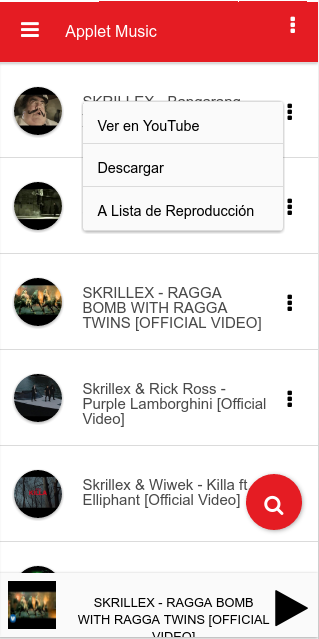
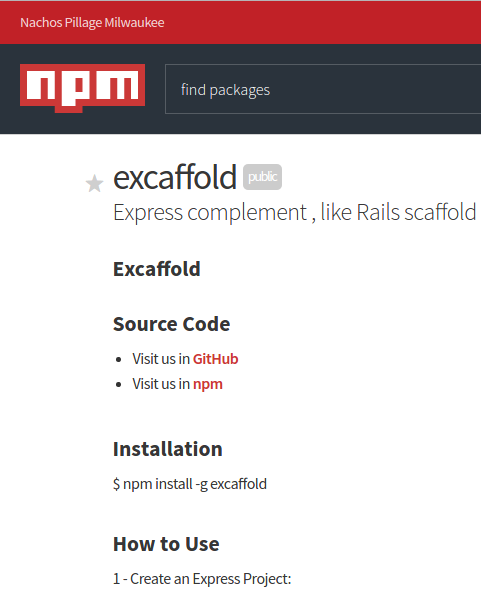

>
Estos son mis principales proyectos personales, estan desarrollados con principalmente en HTML5, CC3 y Javascript. Dos de ellos estan enfocados a correr como aplicaciones móviles y la otra es una errameinta de desarrollo para el Stack MEAN (Mongo + Express + Angular + Node).
Applet Music

>
Esta aplicación es un reproductor de música que nace de una problemática presente en los dispositivos móviles al tratar de ver un video en YouTube y seguir reproduciendo la música en segundo plano.
ver Artículo completo
Poker Planning
>
Este servicio web tiene por objetivo ayudar a los equipos de desarrollo que utilizan la metodología scrum.
ver Artículo completo
Excaffold

>
Esta es una herramienta que facilita el desarrollo en tecnologías como Node JS y el uso de bases de datos relacionales como MYSQL, Postgre SQL y bases de datos no SQL como Mongo DB.
ver Artículo completo